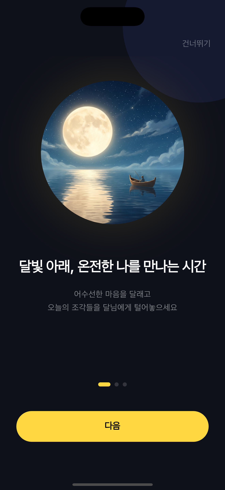
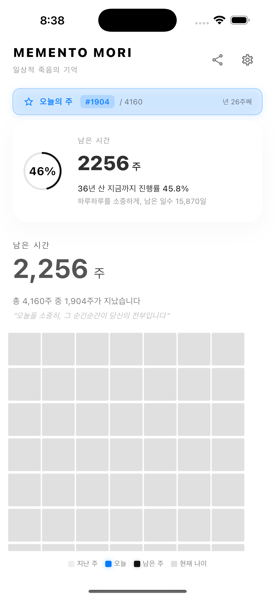
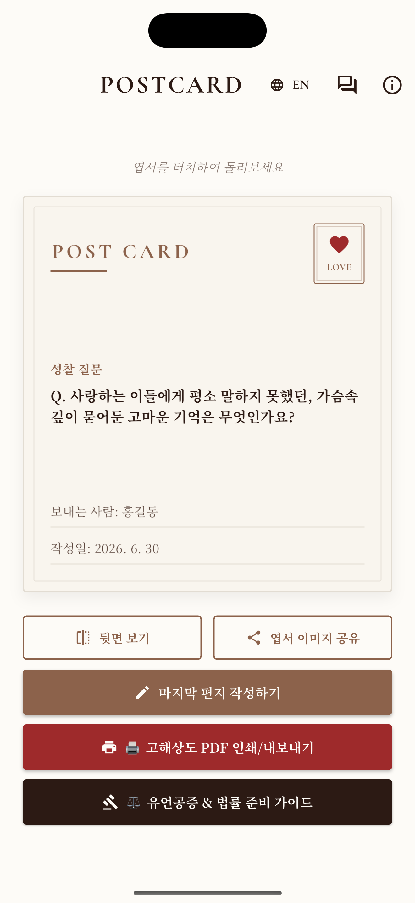

ProofRun · Real Surface Viewer
실제 화면을 보고 판단합니다.
텍스트 요약이 아니라 현재 배포된 웹 화면과 실제 공개 리소스를 먼저 보여줍니다. 구조 분석과 검증 상태는 보조 레이어입니다.
● LIVE SURFACE · READ ONLY
실제 앱 화면
Flutter 앱의 내부 QA/스토어 준비 과정에서 생성된 실제 디바이스 화면입니다. 합성 목업이 아니며, 각 이미지의 원본 경로와 현재성은 manifest에서 확인합니다.

Moon Whisper · 실제 앱 화면
Memento Mori · 실제 앱 홈 화면
내일이 없다면 · 실제 앱 엽서 화면현재 상태: PARTIAL_RUNTIME_EVIDENCE · 실제 캡처는 확보했지만 이번 실행에서 새 시뮬레이터 세션을 재생성한 것은 아닙니다. 다음 adapter는 simulator/device run과 캡처 시각을 자동 바인딩해야 합니다.
현재 공개된 실제 리소스
공개 웹이 사용하는 실제 SVG/WebP 리소스를 직접 로드합니다.


코드와 실제 표면의 연결
—source nodes
—detected edges
LIVEpublic surface
READ ONLYno external mutation
01 · 실제 URL공개 화면 로드
02 · 실제 리소스SVG/WebP 확인
03 · 소스 연결Git source graph
04 · 미검증앱 디바이스 실행
05 · 판단사람이 결정